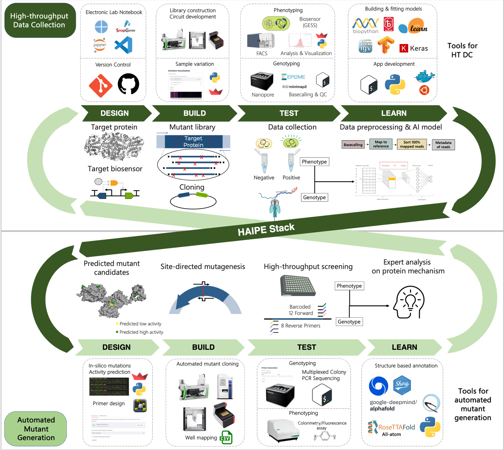

1 Computational Tools for Streamlined Biofoundry Workflows
1.1 Introduction
The Design-Build-Test-Learn (DBTL) cycle, a foundational methodology of synthetic biology, adopts engineering principles to enhance reproducibility and efficiency in biological research. Yet, the Build and Test phases pose considerable challenges to their labor-intensive and time-consuming nature. For instance, the assembly of three DNA fragments often requires a week per circuit assembly by a skilled graduate student. Furthermore, optimizing the expression of a gene with promoters, RBSs, and terminator parts - three different types for each – necessitates creating and testing 27 distinct DNA combinations. This process could extend a graduate student’s workload to four to six months for the construction of an optimal genetic circuit.
On an industrial scale, the Build and Test stages present similarly formidable challenges. The development and commercialization of Artemisinin, a treatment for malaria by Amyris, demanded an investment of $15 million and ten years, equivalent to roughly 150 person-years. Similarly, DuPont’s production of 1,3-propanediol required 575 person-years, highlighting the extensive resource commitment in synthetic biology projects [14]. These instances underline the significant time and labor investments needed to harness the benefits of synthetic biology, explaining why the field, which emerged in the early 2000s, took about a decade to prove its value.
The incorporation of robotics into biology has significantly reduced the manual labor and time constraints traditionally associated with biological experiments. This advancement was pioneered by Dr. Ross D. King in 2004 [15], who developed the robotic scientists Adam and Eve to autonomously investigate yeast metabolism and enzyme discovery [16]. Despite their innovative potential, the application of these robotic scientists has faced limitations due to the need for specialized automation equipment tailored for specific research projects. This requirement often limits the flexibility needed to conduct a wide array of complex biological experiments, leading to significant costs and efforts to adapt commercial equipment for various research needs.
However, the fundamental principles of synthetic biology, including standardized parts, assembly techniques, and an engineering-focused DBTL strategy, have demonstrated significant compatibility with automation and robotics. This synergy has not only enhanced research but also found practical industrial applications. A notable example is Lanzatech’s production of ethanol from greenhouse gases using its clostridiaBiofoundry (cBioFab) [17], which combines cell-free systems with machine learning technology to achieve remarkable industrial breakthroughs [18, 19] in producing 1-hexanol and hexanoic acid (>100x improvement).
A biofoundry integrates the entire DBTL cycle, from initial DNA design to testing cells modified with that DNA, by systematically linking automated hardware and software to streamline the process from gene synthesis to the final product. A key strategy in constructing an efficient biofoundry is the careful design of each DBTL stage to ensure seamless operation and eliminate bottlenecks, significantly improving development speed and throughput. For instance, Ginkgo Bioworks has shown considerable efficiency gains, with its throughput increasing two to four times annually between 2014 and 2020. In 2017, the company achieved a milestone when the cost of testing per strain became lower than that of manual handling [20]. Amyris, having launched its biofoundry in 2011, has successfully commercialized 15 new substances at a consistent rate over the last seven years [21], marking a productivity increase of more than twentyfold compared to its earlier efforts with Artemisinin. These developments underscore the transformative impact of biofoundries on synthetic biology, providing scalable and cost-efficient solutions for bioproduct development (Figure 2). By optimizing the bioproduct development process, biofoundries substantially reduce the time and cost associated with bringing new products to market, representing a significant advancement in biotechnological innovation.
1.2 Considerations required for biofoundry development
1.2.1 Hardware
The concept of a biofoundry often evokes images of automated robotics operating within a biological laboratory. Given this association, automation is deemed essential for the development of biofoundries. However, the deployment of advanced automation machinery, including robotic arms, in fully automated biofoundries requires careful attention to planning. While devices like liquid handlers are crucial for high-throughput well plate-based experiments, incorporating robotic arms with other automated devices, such as automated thermal cyclers or automated incubators, significantly raises both initial and ongoing maintenance costs. Adopting a semi-automated DBTL cycle is one of the strategies that offer maximum flexibility at minimal cost.
Currently, the availability of automated equipment is restricted to a handful of global companies. To broaden the options for users and ensure the provision of high-quality services, ongoing development of such equipment is essential. This necessitates long-term and continuous investment, supported by governmental policies, especially given the current limited market availability. The emphasis in hardware development should be on enhancing the connectivity and flexibility of devices to boost the overall efficiency of the DBTL cycle, rather than focusing solely on individual device specifications.
Furthermore, an increase in hardware throughput does not guarantee an improvement in overall biofoundry performance. One of the major reasons automated equipment may remain underutilized or idle in universities or research institutions is that data management and analysis are failed to keep pace with the hardware’s throughput. In this context, the workflows and software discussed in the subsequent chapters are pivotal considerations prior to hardware deployment.
1.2.2 Workflows
Before delving further into biofoundry development, it’s necessary to define some key terms associated with biofoundry operation for ease of understanding. We introduce two fundamental terms: ‘workflow’ and ‘unit process.’ A unit process is the smallest protocol executed by an automated machine, while a workflow is a sequence of unit processes organized to produce a desired product (Figure 3). The terms ‘protocol’ and ‘process’ are employed broadly. Both unit processes and workflows can be formulated as standard operating procedures (SOPs) which are detailed instructions designed to standardize and enhance the reproducibility of operations.
In constructing a biofoundry, workflows are developed by re-optimizing established manual protocols. Manual protocols frequently overlook or oversimplify sample preparation, deemed apparent. Conversely, automated protocols demand more detailed specifications, including the quantity, position, and handing of reagents and equipment, especially when using multi-well plates.
Developing a workflow involves assessing the level of automation feasible with the available equipment and consumables. The initial level may resemble manual operations, progressing to the use of liquid handlers capable of managing experiments based on 96 or 384-well plates. Utilizing high-throughput equipment not only enhances experiment throughput but also improves reproducibility. Establishing quantitatively measurable metrics within the tier system is crucial for ensuring the reliability and interoperability of workflows.
To enhance a biofoundry’s efficiency, it’s essential to reduce the operational costs associated with workflows and enable the simultaneous running of multiple workflows, which is key to maximizing efficiency and productivity. This challenge can be tackled in two ways. One approach is consolidating samples onto a single plate when different researchers request the same workflow. Alternatively, when different workflows are requested, they can be integrated by considering the run times of each unit process and scheduled as a single workflow (Figure 4). These scheduling strategies, more suitable for semi-automated biofoundries, are essential for enhancing biofoundry performance, given the limited number of machines. Additionally, waste in research, often due to avoidable design flaws or incomplete experiments, is a significant concern. Over 50% of research remains unpublished, half of which is attributable to preventable errors [22]. An integrated biofoundry can minimize these mistakes by facilitating more informed decisions from a broader range of experiments.
1.2.3 Key Gaps in workflows:
Fragmented Workflows: Many biofoundries have disjointed processes across different stages of research and production, making it challenging to maintain a seamless flow from design to implementation.
Lack of Standard Operating Procedures (SOPs): Inconsistent or absent SOPs can lead to variability in experiments, making reproducibility difficult and complicating data comparison.
Integration of Automation: While automation is essential for scaling processes, many workflows do not fully integrate automated systems, leading to inefficiencies and increased manual work.
Data Management and Sharing: Ineffective data management practices can result in difficulties in data access and sharing among team members, hampering collaboration and progress.
Feedback Loops: There may be insufficient mechanisms for feedback between different stages of the workflow, preventing insights from experimental results from being effectively integrated into future designs.
Cross-Disciplinary Collaboration: Workflows often lack structures that promote collaboration across disciplines, which is crucial in a multidisciplinary field like synthetic biology.
Real-Time Monitoring: Many workflows do not incorporate real-time monitoring and analytics, which can help in making timely adjustments and decisions during experiments.
Scalability Protocols: Procedures for scaling up from lab-scale experiments to large-scale production are often underdeveloped, posing challenges for commercialization.
Training and Onboarding: Inefficient onboarding processes for new personnel can slow down productivity and lead to misunderstandings about protocols and workflows.
1.2.4 Software
Despite the increasing necessity for constructing biofoundries, the availability of software specifically designed for biofoundry operations remains limited. While some existing solutions for Electronic Laboratory Notebooks (ELN) or Laboratory Information Management Systems (LIMS) [23] are available, they often do not meet the unique requirements of biofoundry operations comprehensively. Furthermore, the cost of these solutions can be prohibitive for use in an extensively scaled biofoundry environment with a large team.
Developing software for biofoundry operations is indispensable. Creating software that coordinates biological experiments across various stages of the DBTL cycle requires the collaborative, intensive efforts of IT engineers and biologists. To address this challenge, we advocate for a ‘rapid prototyping and soft integration strategy.’ This approach emphasizes the quick development of specific functionalities necessary for biofoundry operations and their integration with existing tools, like Snapgene and GitLab. Modern frameworks for developing web-based applications, such as Python’s Streamlit or R’s Shiny, are invaluable for rapidly producing streamlined software applications. Integrated Development Environments (IDEs) like Visual Studio Code (VSCode) or RStudio are instrumental in managing the entire DBTL cycle, thereby significantly boosting the efficiency and synchronization of biofoundry operations. This approach of ‘rapid prototyping and soft integration’ underscores the importance of continuous software maintenance and updates to support equipment and technological advancements, alongside evolving scientific interests.
Concerning the functional requirements of biofoundry software, a major challenge in biofoundry design is operational costs. It is imperative to reduce the consumption of consumables, time, and labor in individual workflows. Initially, efforts should concentrate on optimizing workflows within a semi-automated system. Software that persistently monitors the availability of automated equipment and materials plays a vital role in maximizing resource use and coordinating the execution of workflows from various users. Moreover, given the extensive number of samples processed by a biofoundry, its operational software must manage a significantly larger volume of equipment, materials, experiments, and operations than a conventional laboratory. This necessitates a seamless system to ensure equipment availability, smooth supply of materials, and swift data analysis for designing subsequent high-throughput experiments. Furthermore, constructing an operational system capable of controlling automated devices from diverse manufacturers requires APIs that can translate the interactions between user-designed workflows and automated equipment into a universally understandable language, such as JSON.
While these endeavors can be demanding and might necessitate collaboration with equipment vendors, initiating software development that monitors equipment status and suggests optimized workflows in a semi-automated system is feasible. The adaptability and compatibility offered by such a system are crucial for enhancing accessibility and interoperability among biofoundry facilities.
1.2.5 Key Gaps in Software
- Data Integration: Many biofoundries utilize disparate systems for data collection and analysis, leading to challenges in integrating and interpreting data from various sources.
- User-Friendly Interfaces: Existing software often lacks intuitive interfaces, making it difficult for non-experts to use advanced tools and access data effectively.
- Collaboration Tools: There is often a shortage of robust collaboration platforms that facilitate communication and project management among multidisciplinary teams.
- Standardized Workflows: A lack of standardized software workflows can lead to inconsistencies in experimental processes and results, hindering reproducibility.
- Simulation and Modeling Tools: Advanced tools for simulating biological processes and modeling systems biology are often limited or not user-friendly, which restricts their use in design and optimization.
- Automated Data Analysis: There is a need for more sophisticated software solutions for automated data analysis and interpretation, particularly for large datasets generated by high-throughput experiments.
- Visualization Tools: Enhanced visualization software is often needed to effectively represent complex biological data and results, making them more accessible to researchers and stakeholders.
- Version Control: Effective version control systems for experimental protocols, data, and software tools are often not well-integrated, leading to potential errors and confusion.
- Interoperability: Many biofoundry software tools lack interoperability, making it difficult to exchange data and functionalities between different platforms and tools
- Regulatory Compliance: Software solutions that aid in ensuring compliance with regulatory requirements are often lacking, making it difficult to manage documentation and quality control.
1.3 Case study: Protein Engineering Stack

This thesis focuses on the development of workflows and software tools with a focus on protein engineering.
1.4 Computational Tools:
1.4.1 Tools for Data Logging and Collaboration:
1.4.1.1 Electronic Lab Notebooks (ELNs):
Electronic Lab Notebooks (ELNs) are essential tools in modern research environments, offering several key advantages over traditional paper notebooks. They facilitate efficient data management by allowing researchers to easily organize, store, and retrieve experimental data. ELNs enhance collaboration among team members by enabling real-time sharing and commenting on data, which fosters greater communication and collective insights. Moreover, they improve data integrity and reproducibility through built-in version control and automated backups, reducing the risk of data loss or errors. ELNs also streamline compliance with regulatory requirements by providing secure, auditable records of experiments. Additionally, their integration with other digital tools and platforms can enhance workflows and automate routine tasks, ultimately increasing productivity and accelerating the research process. Overall, ELNs represent a significant advancement in how scientific data is documented and managed, supporting more effective and innovative research.